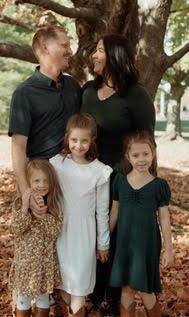

With more than 20 years of experience in renovations and new home construction, I’ve had the opportunity to work through virtually every stage of the building process. From foundations and framing to the final details that bring a home together. That experience has given me a deep appreciation not only for how a home is built, but for the level of planning, craftsmanship and care required to build it well.
The trades have always been in my blood, but my passion for building began with my grandfather. As a child, I spent hours in his workshop watching him create things with his hands. He built everything from fiddles, guitars and mandolins to roll-top desks and intricate pieces of furniture. I was fascinated by the patience and precision that went into his work and, even at a young age, I knew I wanted to follow a similar path.
He taught me that craftsmanship is about more than simply building something. It’s about taking pride in your work and creating something that will continue to have meaning long after you've finished. That philosophy has stayed with me throughout my career.
I began in the trades as a co-op student and spent more than 16 years with the same company, eventually working my way into a project leadership role. That experience allowed me to learn construction from the ground up, working alongside trades, solving problems in the field, managing complex projects and, most importantly, understanding the responsibility that comes with working on someone’s home.
Eventually, I decided it was time to challenge myself and see what the next chapter of my career could look like. In August 2021, that journey brought me to Spotlight Home & Lifestyle.
From the beginning, Spotlight felt different. The company was built around clearly defined values, a strong culture and a genuine commitment to the client experience. Communication, service, craftsmanship and respect weren't simply words on a wall...they shaped how projects were managed and how people were treated.
Those principles aligned naturally with the way I had always believed construction should be done. Not long after joining Spotlight, I was presented with an opportunity I never expected: the possibility of one day carrying the company forward. In January 2024, I proudly became the owner of Spotlight Home & Lifestyle.
Today, my goal is to continue building on the foundation that made Spotlight special while constantly raising the standard of what our clients should expect from a renovation or custom home experience. For me, a successful project is about much more than beautiful finishes. It’s about thoughtful planning, clear and honest communication, exceptional craftsmanship and respecting the trust our clients place in us.
We aren't simply building or renovating houses. We’re creating homes where families will live, gather, celebrate and build their own stories for generations to come.